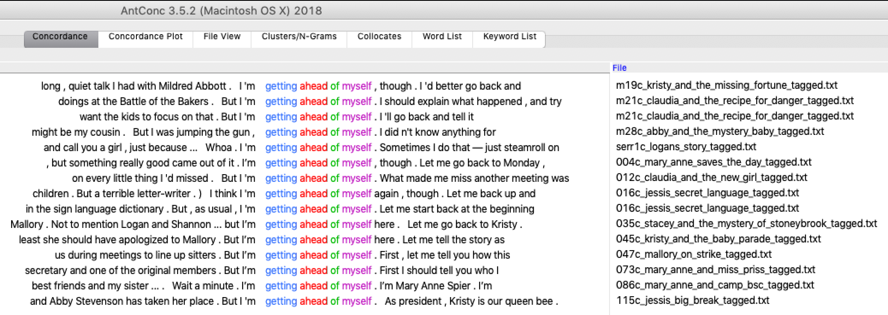
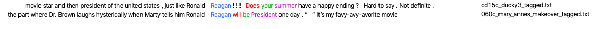

DSC #4: AntConc Saves the Day¶
by Anouk Lang, April 10, 2020

My heart racing, I flipped my laptop open, powered it up and waited with bated breath for the browser to start. This was the moment I’d been waiting for. At last the page loaded and I clicked the link, to get to what I’d been waiting for with such anticipation. Hundreds of beautiful clean text files shone out of the screen at me, carefully labelled, fixed of their OCR errors and culled of their paratexts and their encoding gremlins. It was better than finding a stash of candy in one of Claudia’s pillowcases: it was the corpus of BSC texts, lovingly curated and cleaned by Quinn and Katia (as described in DSC #2: Katia and the Phantom Corpus), and all ready to work with. Meanwhile, a thicket of deadlines and disasters had sprung up in front of the other Data-Sitters, which was just the excuse I needed. “I’ll get started with AntConc!” I told them.
But, as BSC narrators like to do, I’m getting ahead of myself. AntConc, for those who’ve not encountered it before, is a concordancer: a piece of software used in the fields of corpus linguistics and natural language processing (NLP) that lets you load a corpus of texts and then search it for words or phrases. You can modify your search terms with a set of customizable wildcards or regular expressions, and AntConc will bring up those words or phrases in what’s known as a key word in context (KWIC) display. You can then sort these KWIC lines to get a sense of the words that precede or follow the words in your query, generate a frequency list of all the words in the corpus, find words which commonly appear (or collocate) together, bring up a visual display of where in each file the words in your query appear, compare the frequency of words in your corpus to their frequency in a reference corpus, and more. AntConc is well regarded in the digital humanities community as it’s well maintained by its creator Laurence Anthony, it’s free to use, and – one of the things I particularly appreciate about it – it’s lightweight and can usually be installed on lab PCs of the type that people teaching digital humanities can find themselves restricted to using. For classes, or DH beginners for whom jumping into NLP with Python is not a realistic option, it is a good way to demonstrate some of the potential of text analysis using a pretty intuitive graphical user interface (GUI). You might see it as the text analysis equivalent of the Kid-Kit, the box of crafty fun things the BSC took to babysitting gigs when they particularly wanted to keep their charges amused.
I loaded the corpus of BSC books into AntConc (File > Open Dir) and started by generating a word frequency list (Word List tab then Start) and taking a look at the basic stats, which appear at the top of the main white window in the Word List tab once you have clicked Start. The corpus was around 4.7 million words, with around 33 000 different unique words (or types). I then looked at the word frequency list, something which can be an interesting exploratory step, as it lets you see if there are any terms with fairly high frequencies whose presence isn’t immediately explainable by intuition. I was all primed to look up terms relating to the things the other Data-Sitters and I had speculated would make for interesting queries: words around gender, race, consumerism, suburbia and so on. But before any of those appeared on the frequency list, however, I came across the term “little” quite high up. What was even more interesting was that of the 7075 instances of little in the corpus, almost two thirds of them (4653) appeared as part of the bigram “a little”. What could it mean? I decided to investigate further by doing a concordance search for “a little” (Concordance tab, type little into the search box and press Start) and sorting the results alphabetically by the word to the right of the search terms (enter 1R, 2R and 3R into the Kwic Sort boxes then press Sort).
 {:style=”float: right;margin-right: 7px;margin-top: 0px;”}
{:style=”float: right;margin-right: 7px;margin-top: 0px;”}
The first thing to jump out at me – in light of our discussions about similarities and differences between the books and the logistics of keeping things consistent across the series when a number of ghostwriters were producing the books – was the way the formula of “look a little alike” recurred in the introductory descriptions of Mary Anne and Kristy. (If you look at the KWIC lines you’ll spot other formulae in there, notably being best friends, being short and having brown hair.) Given what we knew of the ‘BSC Bible’ (as mentioned in DSC Multilingual Mystery #2: Beware, Lee and Quinn) and its role in guiding the ghostwriters, this wasn’t that surprising. I made a mental note to check, once we got access to the version in the archives, whether “look a little alike” was part of the phraseology it used when describing those two characters.
As I continued to cast my eye over the KWIC lines for the search query “look a little”, trying different sorting options and looking out for other combinations, a more subtle pattern emerged. The phrase was, it seemed, more likely to modify negatively rather than positively inflected adjectives: terms like downcast, forlorn, guilty, hurt, green, pale, wary, and wistful that encompassed emotional, behavioral or somatic states. Were the BSC books, I wondered idly, offering readers a lesson in the textual regulation of negative feelings or bodily states, by suggesting that the way to express one’s own feelings, or represent someone else’s, was by using the premodifying phrase “a little”?
This is the dangerous point in corpus analysis: when a potential finding of interest suggests itself to you and – if you are trained as a literary analyst to value this as ‘close reading’, rather than as a statistician to dismiss it as ‘overfitting’ – it is an almost irresistible mental leap to land on an intuitive explanation, and use the KWIC lines that support your theory as evidence, while quietly discarding the ones that complicate it. There could be any number of reasons why the numbers shake out as they do, so what you need to do is park that intuitive explanation and carry out some additional tests. You could, for instance, check if the word or phrase is more or less frequent in your corpus when compared to a reference corpus (a comparable group of texts which is a roughly acceptable match for the genre, historical period, regional variants and so forth of your own corpus). I sighed. It had been enough of an effort getting our own data together. What corpus could I possibly find that would approximate 4.7 million words of 1980/90s young adult fiction in American English?
In the meantime, though, what I could do pretty easily was a comparison of look a little + [negative state] to look + [negative state]. I used the * wildcard (which stands in for zero or more of any character: see Settings > Global settings then the Wildcards tab for more) to pull up all instances of the lemma look, ie. look, looks, looking, looked and so on, and pulled out a few examples to get a sense of how often a term describing a negative state would be preceded by a little:
8 instances of look* a little surprised vs 82 of look* surprised (10%)
8 instances of look* a little puzzled vs 62 of look* puzzled (13%)
12 instances of look* a little confused vs 62 of look* confused (19%)
12 instances of look* a little embarrassed vs 28 of look* embarrassed (43%)
7 instances of look* a little sheepish vs 13 instances of look* sheepish (54%)
Pulling on my amateur sociolinguist’s deerstalker hat (one of which fashion-forward Claudia would undoubtedly own), I noticed that, as the percentages in this short list increased – that is, as the likelihood that one of these states would be qualified by “a little” – so the perceived negative qualities of the emotion seemed also to increase. There’s nothing particularly wrong with or shameful about being surprised, I figured, so perhaps it’s not very important to cushion that judgment of oneself or others with “a little”. But if someone is embarrassed or sheepish, then that’s an unpleasant state for them to be in, and for others to witness them in, so it might become more pressing to modify those descriptors.
I really wanted the other Data-Sitters to weigh in on this – safety in numbers when you have a potentially dangerous data-sitting job – but I still had some work to do. For a start, I wanted to be sure I had captured all the adjectives describing emotional states that were modified by “a little” in the corpus, rather than relying on those I had identified manually, and see whether my hypothesis still held. The best way to do this was to apply part-of-speech tags, or POS-tags, to every word in the corpus. This is most efficiently done with something like the NLTK’s nltk.pos_tag function. But, as I wanted to use only tools with a GUI, I turned to the CLAWS POS-tagger, which allows you to manually paste in plain-text and get back a version that has had parts of speech tags applied to it automatically. A singular noun such as “cat” will be tagged as cat_NN1, for instance, while a verb such as “babysit” will be tagged babysit_VV0 and so forth. The automated tagging isn’t perfect, but as it would take an absurd amount of time to manually assign part-of-speech tags to a corpus this size, it’s a good deal better than not having any pos-tags at all. The C7 tagset, which is the one I was using, has three tags for adjectives: JJ (general adjective), JJR (general comparative adjective and JJT (general superlative adjective), which are appended to the end of each word with an underscore, so you can include all or part of a tag in your search term by using wildcards. AntConc allows you to specify the characters that separate words from their tags, so once I had tagged my corpus and loaded it into AntConc, I set the tag marker to _ (Settings > Global Settings then select Tags and look in the box next to Tag marker). I then typed in the search query a_* little_* *_J* (meaning “find me all instances of phrases consisting of the word a followed by any tag, then “little” followed by any tag, then any word followed by a tag that starts with J and contains 0 or more other letters, ie. JJ, JJR and JJT”), and hit Start.
I got back 1271 results, mostly consisting of adjectives of the sort I was looking for, but there were a fair number of errors such a “little stuffed koala bear” (where a “little” denoted size), and “let’s go downtown, shop a little, separate for lunch and then shop some more” (where a tagging error had missed the comma before “separate” and thus miscategorized it as an adjective rather than a noun). I saved the output to a text file, opened that in Excel and manually removed all the false positives, which yielded a list of 1054. I then ran the same search but with a search query string that picked up the past participles of verbs (ie. a_* little_* *_VVN), so as to return phrases such as “a little carried away” and “a little choked up”. This search produced 353 results which, after removing a few errors (eg. “a little jeweled mirror”), left me with 351. Once that was done, I amalgamated the two lists, copied the column containing “a little” + the descriptor, and pasted it into a new file in the text editor BBEdit. I used regular expressions to strip out the tags and all the words in the sentence except the descriptor (replacing a_.{2}\slittle_.{2}\s with nothing to remove the text that preceded each descriptor, _.{2,3}\s.* with nothing to remove the text that followed, and \n[^a-z]* with \n to clean up any stray non-alphanumeric characters), and was left with a list of 1405 descriptors. (For more on using regular expressions, see DSC Multilingual Mystery #3.)
But I wasn’t quite done yet. I had to find out how many of each type of word there were in my list, so I used OpenRefine’s Text Facet function to get a list of the clustered terms (367, as it turns out) with counts. OpenRefine will give you a tab-separated version of this information (if you click ‘367 choices’, just below the words ‘Column 1’ to the left of the screen), so I dumped that into Excel, and added two more columns: the number of times the word appeared in the corpus in total, and the proportion of times the word was modified by a little. (For those seeking a proper tutorial on how to use the power tool that is OpenRefine, Quinn’s got you covered: see DSC Multilingual Mystery #3.)
word |
n preceded by a little in BSC corpus |
total n in BSC corpus |
n preceded by a little in BSC corpus / total n in BSC corpus (%) |
|---|---|---|---|
panicky |
6 |
13 |
46.15384615 |
straighter |
8 |
25 |
32 |
slower |
8 |
28 |
28.57142857 |
queasy |
5 |
18 |
27.77777778 |
taken_aback |
6 |
22 |
27.27272727 |
choked_up |
10 |
38 |
26.31578947 |
shaky |
18 |
82 |
21.95121951 |
sheepish |
8 |
40 |
20 |
carried_away |
8 |
41 |
19.51219512 |
calmer |
6 |
31 |
19.35483871 |
overwhelmed |
9 |
52 |
17.30769231 |
dazed |
5 |
32 |
15.625 |
dizzy |
5 |
40 |
12.5 |
disappointed |
29 |
266 |
10.90225564 |
bewildered |
8 |
74 |
10.81081081 |
annoyed |
14 |
142 |
9.85915493 |
jealous |
15 |
164 |
9.146341463 |
nervous |
63 |
709 |
8.885754584 |
guilty |
24 |
273 |
8.791208791 |
immature |
6 |
73 |
8.219178082 |
confused |
25 |
311 |
8.038585209 |
distracted |
8 |
101 |
7.920792079 |
lonely |
10 |
129 |
7.751937984 |
embarrassed |
25 |
332 |
7.530120482 |
uncomfortable |
12 |
162 |
7.407407407 |
odd |
10 |
161 |
6.211180124 |
suspicious |
10 |
163 |
6.134969325 |
awkward |
5 |
82 |
6.097560976 |
puzzled |
10 |
174 |
5.747126437 |
louder |
7 |
123 |
5.691056911 |
surprised |
42 |
760 |
5.526315789 |
complicated |
10 |
183 |
5.464480874 |
easier |
13 |
240 |
5.416666667 |
early |
40 |
805 |
4.968944099 |
embarrassing |
6 |
138 |
4.347826087 |
harder |
8 |
190 |
4.210526316 |
worried |
26 |
674 |
3.857566766 |
concerned |
10 |
263 |
3.802281369 |
closer |
14 |
389 |
3.598971722 |
further |
5 |
141 |
3.546099291 |
scary |
10 |
286 |
3.496503497 |
unusual |
5 |
144 |
3.472222222 |
difficult |
7 |
233 |
3.004291845 |
strange |
13 |
447 |
2.908277405 |
late |
29 |
1153 |
2.515177797 |
weird |
16 |
687 |
2.328966521 |
sad |
12 |
521 |
2.303262956 |
bored |
6 |
263 |
2.281368821 |
shocked |
5 |
227 |
2.202643172 |
older |
19 |
877 |
2.166476625 |
better |
63 |
2912 |
2.163461538 |
tired |
13 |
641 |
2.028081123 |
wild |
9 |
498 |
1.807228916 |
afraid |
10 |
591 |
1.692047377 |
scared |
7 |
436 |
1.605504587 |
crazy |
12 |
845 |
1.420118343 |
hurt |
11 |
780 |
1.41025641 |
young |
8 |
614 |
1.302931596 |
different |
19 |
1526 |
1.24508519 |
angry |
7 |
576 |
1.215277778 |
sick |
7 |
706 |
0.991501416 |
funny |
9 |
1178 |
0.764006791 |
younger |
6 |
800 |
0.75 |
hard |
18 |
2488 |
0.723472669 |
sorry |
10 |
1773 |
0.564015792 |
short |
5 |
1017 |
0.491642085 |
old |
7 |
3979 |
0.175923599 |
I sat back and looked at my handiwork with satisfaction: a table of the words in the BSC modified by “a little” 5 times or more, sorted from highest to lowest likelihood of being thus modified. The columns made it easy to see that a word like “panicky”, for instance, was preceded by “a little” over 46% of the time, which looked like an impressively high result, but as “panicky” only made 13 appearances in the corpus in total, this wasn’t a very reliable finding. In comparison, words like “tired” (modified just over 2% of the time) or “sick” (modified just under 1% of the time) had much lower likelihoods of appearing after “a little”, but with a much higher frequency in the corpus (both around 700 instances), the proportions were more reliable. How much more reliable, I couldn’t say: one of the missing things in doctoral training in English literature and the Stoneybrook Middle School curriculum is a proper grounding in statistics. Without that in my own disciplinary background, my best bet was to find another Data-Sitter or perhaps recruit a new associate Data-Sitter with which to collaborate. A book for later in the series, perhaps (drop us a tweet at #DataSittersClub if you’re interested).
So, some of the terms in the list were more trustworthy than others. But to what extent did that compromise my earlier hypothesis about there being a focus in the books on mitigating unpleasant emotions via the (over)use of the premodifying phrase a little? There were terms towards the top of the list – panicky, queasy, taken aback, choked up, sheepish, carried away – which seemed very much in tune with the intense emotions experienced in teenagerhood: feelings whose distress was multiplied by the mortifying possibility that you would be observed – and judged – for going through them, rather than gliding through them unruffled. But as evocative as they were, these terms were not a reliable basis on which to build an argument, as they each numbered only a few dozen. However, a little further down the list were terms including disappointed, annoyed, jealous, nervous, guilty, confused, embarrassed and uncomfortable that, while denoting feelings that were perhaps less viscerally intense, nonetheless signalled other unpleasant states, and which appeared at least a hundred times in the corpus (nervous, in fact, appeared 709 times). These seemed like more of a solid basis on which to hang an interpretation. And, taking the more and the less reliable terms all together, it did feel like the list moved, roughly, from more intense to less intense, and from more excessive to more reasonable, as the likelihood of modification by “a little” decreased. Describing someone as “carried away” felt to me as if it contained the implication that they were over-excited and unreasonably emotional, as opposed to “worried” or “concerned” which didn’t carry those same overtones of inappropriate excess.
Pondering the extent to which my British/Australian English would lead my judgments about the positive or negative associations of particular words in 1980s tween American English to differ to those of the rest of the Data-Sitters on the other side of the Atlantic, I went off to search for a reference corpus. The Corpus of Contemporary American English (COCA) presented itself as my best option, as it contains 1 billion words from 1990 to the present, and covers a range of genres, including fiction. It was far from a perfect match, and the interface limited me to an irritatingly low number of queries per 24 hour period, but it was the best thing to hand. I rolled up my sleeves and got searching.
Querying COCA for all phrases with “a little” + an adjective turned up a list that, sorted by frequency, was also heavy on the negative terms, but didn’t follow quite the same pattern I’d been hypothesizing about:

I wasn’t comparing like with like here, of course: I’d selected from the BSC corpus only those adjectives that I interpreted as descriptive of emotional states, and my COCA search had delivered all adjectives, but it nonetheless showed that negatively-inflected words did generally outnumber positively-inflected ones. The most common negative terms, however, weren’t along the lines of the intensely emotional words that had been prominent in the DSC corpus. Terms like scared, disappointed, uncomfortable, worried, awkward and embarrassed were, in fact, less frequent than more prosaic terms like different, extra and higher. In other words, American English of the last four or so decades didn’t seem to be as focused on the discursive cushioning of emotional distress as the BSC books.
However, when I repeated with COCA what I’d done on the BSC corpus—considering not just the raw frequencies but also the likelihood that a particular word would be modified by a little—the results looked much more like what I’d found earlier. The words “higher” and “different”, prominent in the raw frequencies, retreated further down the list due to their relatively high incidence as unmodified terms, and the words that clustered at the top (all with at least a few hundred appearances in the corpus) were more redolent of the intense-emotions words in the BSC: nervous, awkward, embarrassed, disappointed, uncomfortable. As I went down the list, these words gave way to others that conveyed less intensity: scared and sad yielded to the somewhat more formal worried and concerned, and a little further down more neutral and positive terms began appearing (bigger, easier, better).
word |
n preceded by a little in COCA |
total n in COCA |
n preceded by a little in COCA / total n in COCA (%) |
|---|---|---|---|
nervous |
1767 |
33768 |
5.232764748 |
awkward |
395 |
14593 |
2.706777222 |
embarrassed |
387 |
14747 |
2.624262562 |
extra |
1687 |
65358 |
2.581168334 |
weird |
1024 |
41486 |
2.46830256 |
disappointed |
498 |
21133 |
2.356504046 |
uncomfortable |
467 |
20240 |
2.307312253 |
scary |
466 |
21383 |
2.179301314 |
rough |
499 |
27516 |
1.813490333 |
surprised |
843 |
47280 |
1.782994924 |
tired |
869 |
50685 |
1.714511197 |
odd |
494 |
29414 |
1.67947236 |
strange |
789 |
55527 |
1.420930358 |
crazy |
1007 |
86075 |
1.169909962 |
scared |
517 |
44224 |
1.16904848 |
sad |
499 |
51799 |
0.963339061 |
older |
826 |
94860 |
0.870756905 |
worried |
462 |
55732 |
0.8289672 |
concerned |
565 |
74264 |
0.760799311 |
slow |
498 |
66674 |
0.746917839 |
late |
1342 |
187921 |
0.714129874 |
busy |
358 |
50183 |
0.713388996 |
bigger |
384 |
55578 |
0.690920868 |
easier |
381 |
60632 |
0.628381053 |
different |
2456 |
413594 |
0.593819059 |
higher |
658 |
145934 |
0.450888758 |
short |
491 |
151942 |
0.323149623 |
difficult |
397 |
136572 |
0.29068916 |
longer |
416 |
155671 |
0.267230248 |
hard |
786 |
308005 |
0.255190662 |
early |
602 |
262539 |
0.229299266 |
old |
736 |
425700 |
0.172891708 |
black |
367 |
310325 |
0.118263111 |
white |
374 |
369206 |
0.101298462 |
better |
368 |
495459 |
0.074274562 |
(The lower percentages in the right-most column are explained by the fact that COCA is a great deal bigger than the BSC corpus. The larger the corpus, the larger the number of unique words, so it’s understandable that the number of times any single word occurs in a bigger corpus relative to the total word count will be lower than the same calculation for the same word in a smaller corpus.)
While I was wondering what to make of the appearance of more objectively descriptive terms such as bigger, easier, better, I made a momentous discovery. There was in fact a decent reference corpus for the BSC, and it had been right in front of my nose all along: COCA’s sub-corpus of Juvenile Fiction! (That’d teach me not to read the documentation properly when taking a new corpus for a ride.) At 3.2 million words it was, size-wise, in the same ballpark as our DSC corpus, and so I wouldn’t even have to do any sampling to bring the two corpora into line. I ran the same “a little” + adjective search that I’d done for the big COCA corpus (including words that were premodified 3 times or more), normalized by the raw frequencies as before, and then, again, sorted the terms by likelihood of being premodified by “a little”.
word |
n preceded by a little in COCA Juv Fic |
total n in COCA Juv Fic |
n preceded by a little in COCA Juv Fic / total n in COCA Juv Fic (%) |
|---|---|---|---|
confusing |
3 |
17 |
17.64705882 |
jealous |
5 |
83 |
6.024096386 |
nervous |
11 |
247 |
4.453441296 |
shy |
3 |
73 |
4.109589041 |
embarrassed |
4 |
118 |
3.389830508 |
extra |
5 |
183 |
2.732240437 |
guilty |
3 |
126 |
2.380952381 |
rough |
3 |
128 |
2.34375 |
higher |
3 |
152 |
1.973684211 |
crazy |
6 |
322 |
1.863354037 |
lower |
3 |
165 |
1.818181818 |
weak |
3 |
184 |
1.630434783 |
older |
8 |
499 |
1.603206413 |
weird |
3 |
195 |
1.538461538 |
pale |
4 |
269 |
1.486988848 |
tired |
6 |
432 |
1.388888889 |
scared |
5 |
393 |
1.272264631 |
early |
6 |
482 |
1.244813278 |
strange |
6 |
493 |
1.21703854 |
mad |
4 |
330 |
1.212121212 |
different |
6 |
721 |
0.832177531 |
afraid |
4 |
556 |
0.71942446 |
sick |
3 |
418 |
0.717703349 |
green |
5 |
785 |
0.636942675 |
longer |
3 |
502 |
0.597609562 |
late |
4 |
737 |
0.542740841 |
brown |
3 |
648 |
0.462962963 |
old |
5 |
2831 |
0.176616037 |
white |
3 |
1732 |
0.173210162 |
The raw frequencies were even lower here than in my BSC corpus, so all the same disclaimers applied. But the comparison with the COCA corpus and the COCA Juvenile Fiction sub-corpus did suggest that, while it might be a feature of American English that words or phrases describing unpleasant emotional states would be fairly likely to be modified by “a little”—both in children’s and teen fiction and in language more generally, which is something that I imagine sociolinguists are already well aware of and have explanations for, and perhaps they’d like to weigh in with them on our #DataSittersClub hashtag if they’re reading this—the BSC books had a more intensified version of this discursive formation going on. The terms that topped the COCA and COCA Juvenile Fiction searches – confusing, jealous, nervous, shy, embarrassed, awkward – appeared in the BSC search, but some way down the list (jealous was the highest, coming in at number 17). Above those words (which, to me at least, signalled a moderate level of distress) there were more intensive emotional states, many of which had some kind of somatic dimension to them: panicky, queasy, choked up, shaky, dazed, dizzy. It was as if the BSC books had taken an existing pattern in language and amped it up so as to capture, and foreground, the intimate nexus between bodily and emotional states that is often portrayed as quintessential to the experience of being a teenager.

No one was interested in my dumb theory. Everyone was, however, entranced by AntConc. “Hey, I saw ‘happy ending’ a bunch of times!” exclaimed Roopsi. “Can you look that up?”

“Sure,” I said, and did the search. Everyone started to talk at once about why there might be so many mentions of happy endings, and whether this was about the endings of the novels themselves, ways of describing what happened to characters and families, or something else. It was, I had to admit, more interesting than my deep dive into “a little”.
“I’m sure they start talking about Ronald Reagan at one point”, Katia said, so I looked up reagan.
“Wait, are they talking about Back to the Future? They’re talking about Back to the Future!” Roopsi squealed.

And, before I knew it, we were down a rabbit hole of the movies the BSC characters watched:

“Um. Guys … guys?” I said, trying to get us back on track by using the term that the BSC overwhelmingly uses to address each other.

“Guys,” I said more firmly, attempting to channel Kristy bringing a BSC meeting to order. “What do you think about these findings around ‘a little’ and the interpretation I’ve come up with? Is there something there? What have I missed?”
Gradually, everyone turned their attention back to the searches I’d done. “I think you’d want to look at other kinds of modifying phrases as well”, suggested Quinn. “Like ‘sort of’ and ‘kind of’, and see if the same pattern appeared.”
“Yeah, I had the same idea,” I said, “but I was running a bit short on time. I’ll give them a go, though. ”
“You could also look at what comes after those phrases,” Roopsi pointed out. “If they’re followed by the word ‘but’, for instance, that’d change something of the meaning.”
“OK, cool.” I said. “That’s pretty easy to try out.” And sure enough, a few quick searches pulled up lots of hits where but worked to signal a swerve away from whatever the ‘a little’ + descriptor phrase had been hedging.


“Does it make a difference who’s talking to who? Or whether the narrator is describing an interaction?” wondered Katia.
“Yeah, that was one of the things I wanted to look at in more detail too,” I said. “I was curious about whether women and girls were overrepresented as either saying these phrases, or being described by them. I had a quick back-of-the-envelope look at it, but nothing really clear emerged. It’d have to be done properly by, I guess, using the tags to separate out masculine pronouns from feminine pronouns, automating the categorization of names into male and female, and so on. So it’s probably a bigger project for another day.”
“It’s kind of surprising that ‘scared’ is so frequent,” said Roopsi. “I wonder if that’s the influence of the mysteries? Could you separate out the mysteries and do a search on just those?”
“Sure,” I said. “You just have to construct a corpus out of just those files, put them in a folder, load that new folder into AntConc and off you go. You could even load the rest of the files into AntConc as your reference corpus, and then see how the mystery novels differed from the other BSC novels.”
“’Bewildered’” is interesting,” mused Katia. “That doesn’t seem like the kind of word you’d expect to see in teen fiction.”
“Maybe it’s a pet word for one of the ghostwriters?” Quinn wondered. “Hey, we could cross-reference all the books in which it appears with the list of which ghostwriter wrote what that’s on the fan wiki!”
“That would be neat,” I agreed. “Maybe we can work towards an authorship attribution book in the future?”
We talked some more, I took notes as best I could, and then everyone had to go off to other meetings, appointments, and in my case, to sleep.
The other Data-Sitters had given me a lot to think about, and I was glad to have had their eyes on my methodology and results, such as they were, and their moderating influence on my somewhat premature conclusions. I tried out Quinn’s suggestion of looking for other premodifying phrases: “sort of” came in at 1232 instances, and had the same patterning around “sort of alike” that I’d noticed with “a little alike” in the Mary Anne and Kristy introductions, while “kind of” appeared 1940 time, and at a first glance seemed slightly more likely to collocate with positively inflected terms such as cute, fun and interesting. Following Roopsi’s idea of looking at what followed the words and phrases pre-modified by “a little”, I noticed other features – sometimes punctuation, sometimes the word “well” or “um” – being used to further delay or cushion the descriptors.


These examples felt like they supported my theory: not only did most of them have some kind of negative connotations to them (rooms and houses being untidy; people being displeased; judgments about unpleasant character traits), but they showcased other ways to push back the moment when a negative judgement is voiced (“the script is a little – well, it’s a little boring and it seems a little … I don’t know … a little insulting”). I could see it was going to be hard to give up my theory. I guess close reading habits die hard.
In the days that followed, I found myself wondering what these findings illuminated of the books more broadly. My thoughts kept returning to the pedagogical imperative of children’s literature that Maria had spoken about in DSC #3: The Truth About Digital Humanities Collaborations (and Textual Variants!), and in addition, the socializing function of children’s literature that it is impossible not to notice when you begin reading children’s literature to children when you yourself are an adult. I couldn’t shake the sense that the BSC books were gently modelling to their readers ways to mitigate the emotional distress experienced by people around you, even if those people are characters in a book rather than real people in the real world, in ways that seemed to me remarkably well aligned with concepts of emotional labour that women are disproportionately socialised and expected to perform. Was it taking it too far to draw a conclusion of that sort just from lists of word frequencies? Maybe the other Data-Sitters would take up that question in their own explorations with Voyant. Maybe they’d find much more intriguing, or even contradictory, things. Or maybe they’d just happily fall down a rabbit hole following popular culture references from the 1980s and 1990s, and that’d be the last we ever heard of them.
Suggested Citation¶
Lang, Anouk. “DSC #4: AntConc Saves the Day.” The Data-Sitters Club. April 10, 2020. https://datasittersclub.github.io/site/dsc4/.